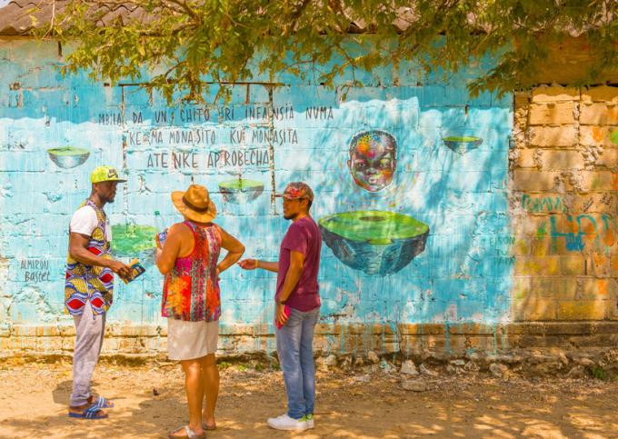

Colombia Pre-Departure Packet
EDUC 480 - Howard University
Overview of Colombia
Colombia, situated at the northern tip of South America, is a country of remarkable diversity and charm. Boasting a population of over 50 million, it’s a melting pot of cultures, from indigenous communities to descendants of Spanish colonizers and African slaves. The country spans a variety of landscapes, from the Andes Mountains to the Amazon rainforest, Caribbean and Pacific coastlines.

Colombia map
Days 1-4: Medellín
Medellín has transformed into a city of innovation and culture.

Medellin city street
Day 1 (Sun March 2)
- Morning:Flight to Medellín (DCA to MIA, MIA to MDE)
- Afternoon: Arrival and hotel check-in
- Evening: Dinner and cultural exchange
Day 2 (Mon March 3)
- Morning: Class time
- Afternoon: Visit to Comuna 13
Day 3 (Tue March 4)
- Morning: Class time
- Afternoon: Medellin Afro City Tour
Day 4 (Wed March 5)
- Morning: Checkout of hotel; transfer to Cartagena
- Afternoon: School/excursion and hotel check-in
Days 5-7: Cartagena and Palenque
Cartagena, a UNESCO World Heritage site, offers a perfect blend of Caribbean atmosphere and colonial charm. Palenque is an historic African village in Colombia.

Day 5 (Thu March 6)
- Morning: Day trip to San Basilio de Palenque
- Afternoon: Return to Cartagena
Day 6 (Fri March 7)
- Morning: Travel to Rosario Island Beach
- Afternoon: Beach Day
Day 7 (Sat March 8)
- Morning: Checkout and departure (CTG to MIA, MIA to DCA)
- Afternoon: Return to DCA

Documents
- Passport (valid for at least 6 months beyond March 1, 2025)
- Credit cards and some cash
- Copies of important documents

Traditional Colombian dishes